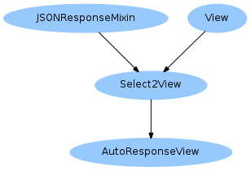

Equals to ‘nil’ constant.
Use this in Select2View.get_results() to mean no error, instead of hardcoding ‘nil’ value.
Bases: object
A mixin that can be used to render a JSON response.
alias of HttpResponse
Bases: django_select2.views.JSONResponseMixin, django.views.generic.base.View
Base view which is designed to respond with JSON to Ajax queries from heavy widgets/fields.
Although the widgets won’t enforce the type of data_view it gets, but it is recommended to sub-class this view instead of creating a Django view from scratch.
Note
Only GET Http requests are supported.
| Parameters: | e (Exception) – Exception object. |
|---|---|
| Returns: | Response with status code of 404 if e is Http404 object, else 400. |
| Return type: | HttpResponse |
Sub-classes can use this to raise exception on permission check failures, or these checks can be placed in urls.py, e.g. login_required(SelectClass.as_view()).
| Parameters: |
|
|---|
Warning
Sub-classes should override this. You really do not want random people making Http reqeusts to your server, be able to get access to sensitive information.
Returns the result for the given search term.
| Parameters: |
|
|---|
Expected output is of the form:
(err, has_more, [results])
Where results = [(id1, text1), (id2, text2), ...]
For example:
('nil', False,
[
(1, 'Value label1'),
(20, 'Value label2'),
])
When everything is fine then the err must be ‘nil’. has_more should be true if there are more rows.
Bases: django_select2.views.Select2View
A central view meant to respond to Ajax queries for all Heavy widgets/fields. Although it is not mandatory to use, but is immensely helpful.
Tip
Fields which want to use this view must sub-class AutoViewFieldMixin.